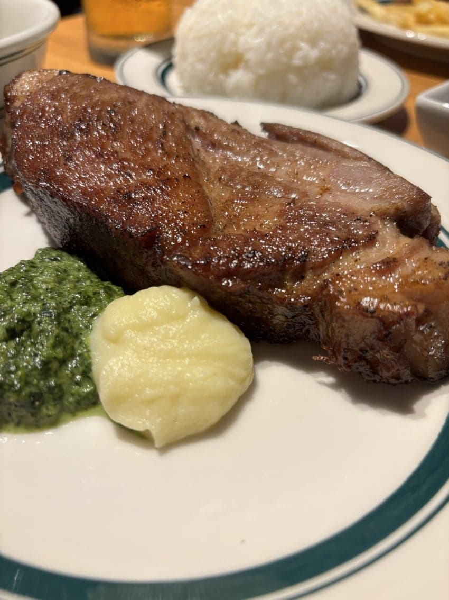
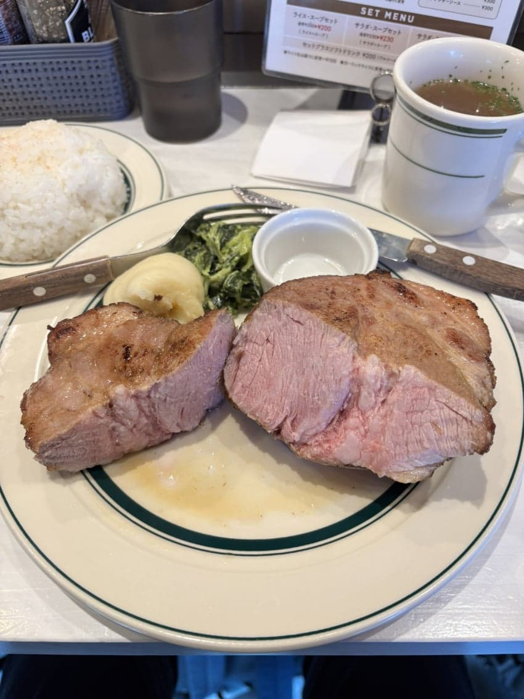
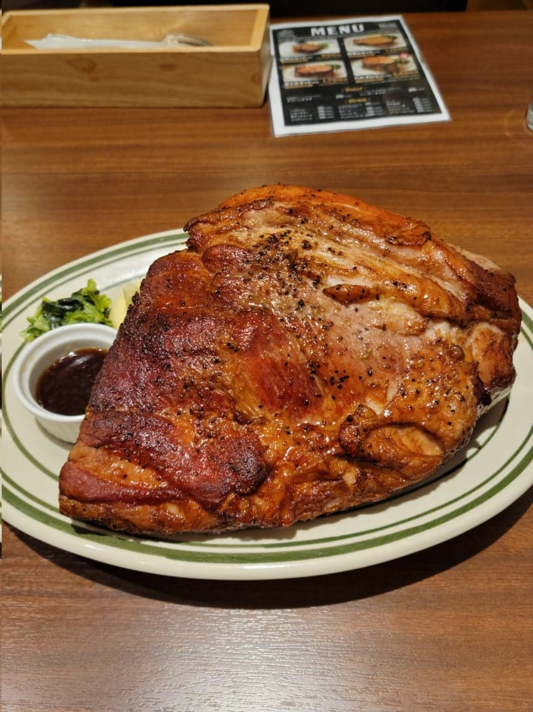
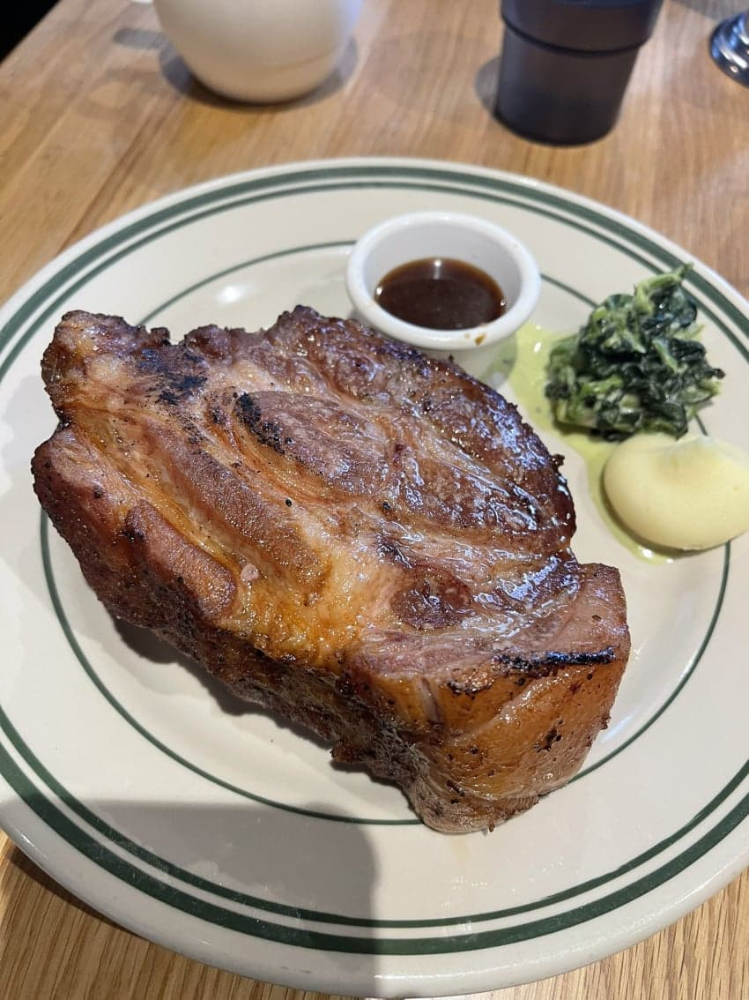
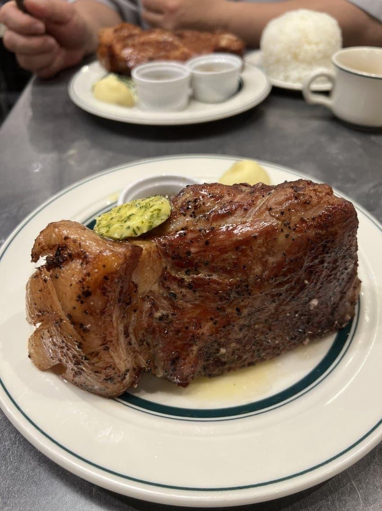
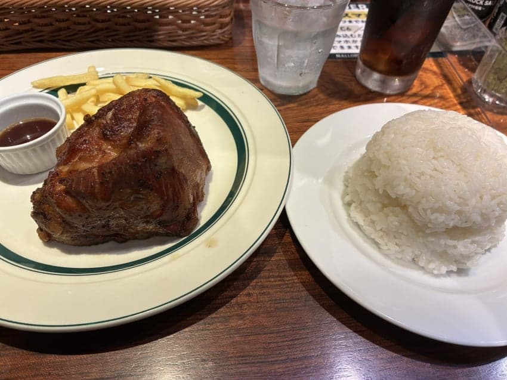
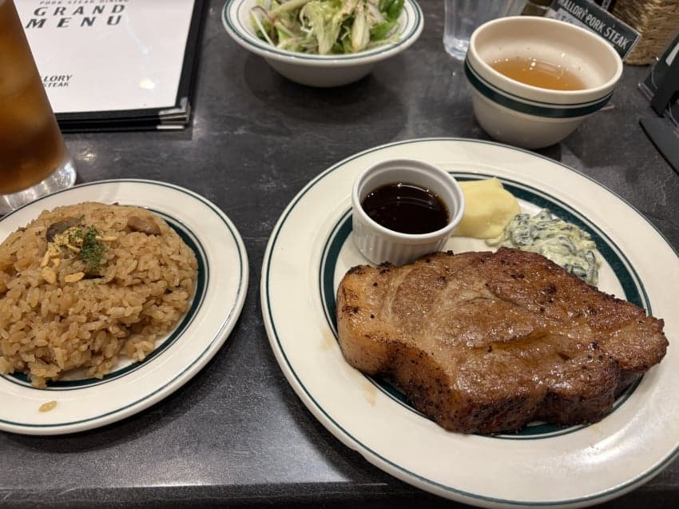
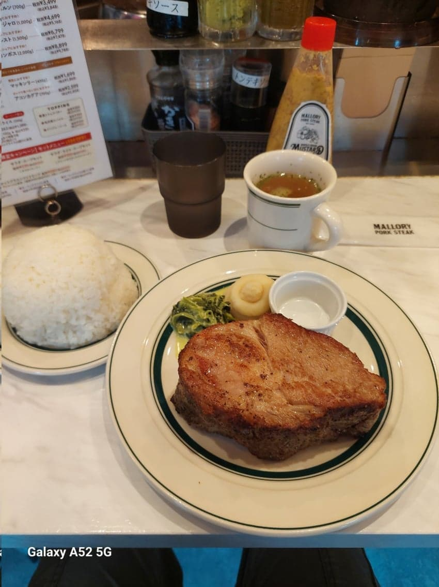
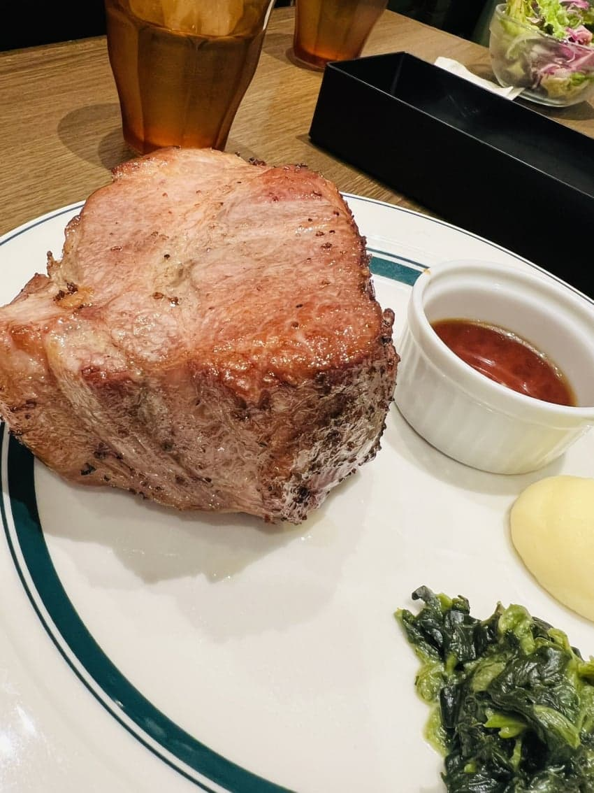
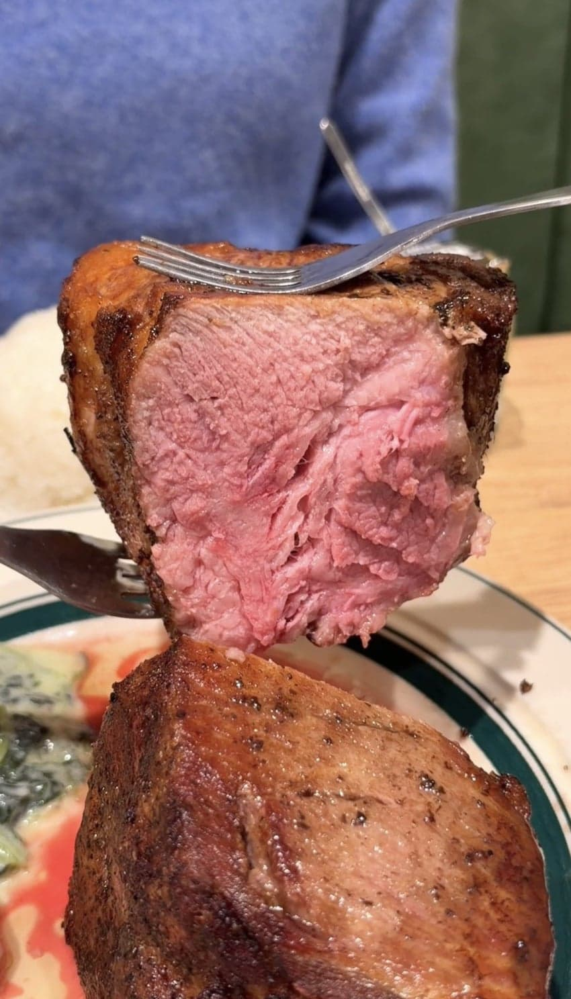
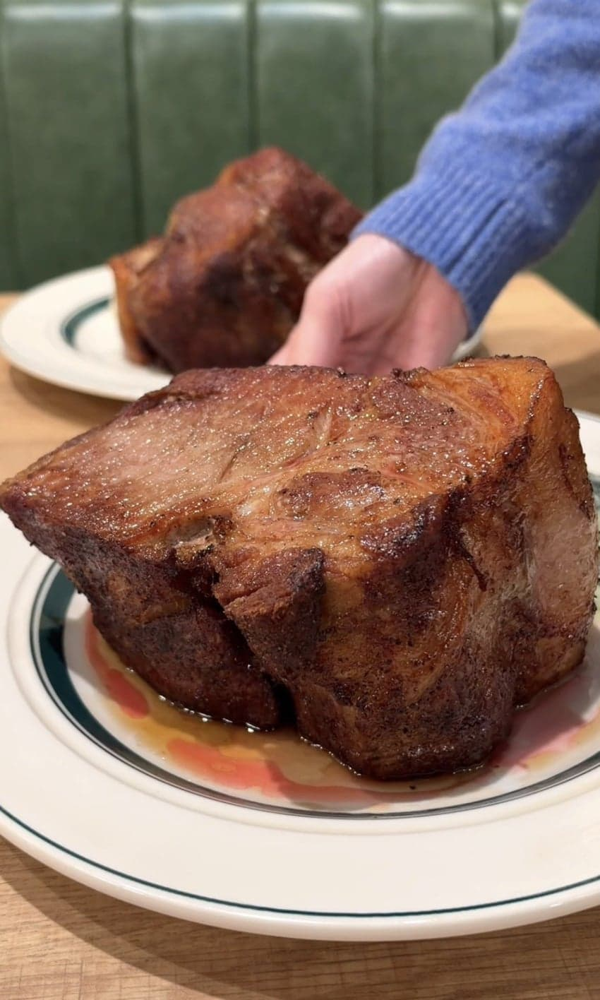
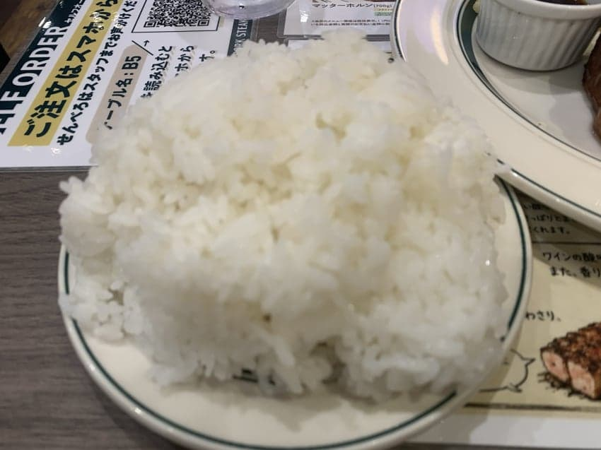
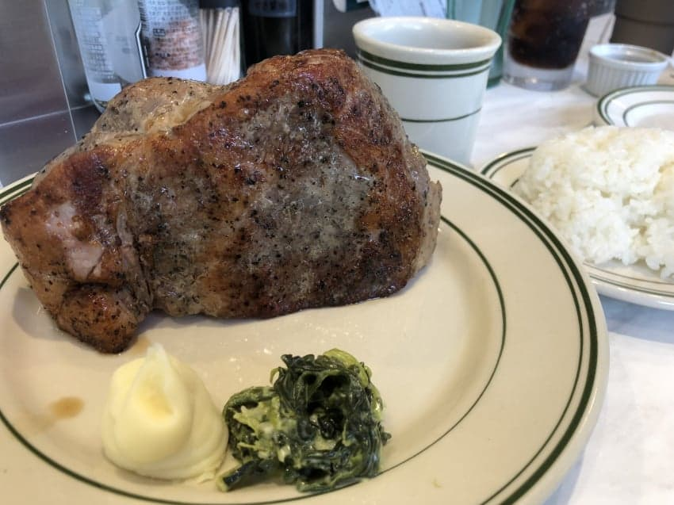
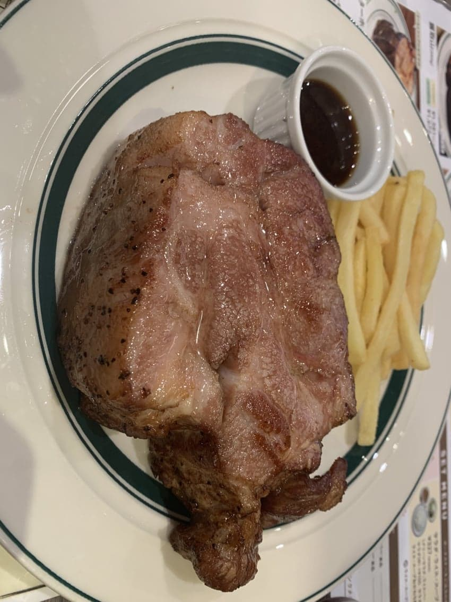
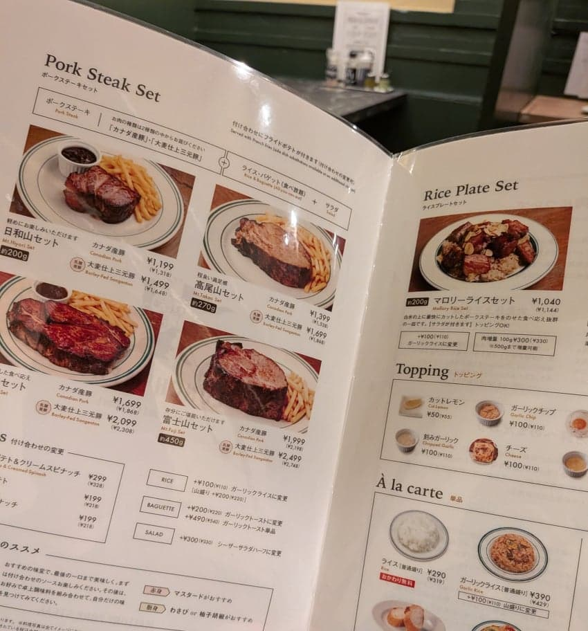
マロリーポーク















댓글
수집 당시 댓글 431개
· ㅇㅇ · 11.07 16:48:18
· ㅇㅇ · 11.07 16:49:04
· ㅇㅇ · 11.07 16:51:13
· ㅇㅇ · 11.07 16:54:19
· ㅇㅇ · 11.07 16:56:15
· ㅇㅇ · 11.07 16:56:34
· ㅇㅇ · 11.07 16:57:01
· ㅇㅇ · 11.07 16:57:27
· ㅇㅇ · 11.07 16:57:44
· ㅇㅇ · 11.07 16:57:56
· ㅇㅇ · 11.07 16:58:27
· ㅇㅇ · 11.07 16:58:57
· ㅇㅇ · 11.07 16:59:22
· ㅇㅇ · 11.07 16:59:25
· ㅇㅇ · 11.07 16:59:47
· ㅇㅇ · 11.07 17:00:18
· ㅇㅇ · 11.07 17:00:50
· ㅇㅇ · 11.07 17:00:55
· ㅇㅇ · 11.07 17:01:30
· ㅇㅇ · 11.07 17:02:25
· ㅇㅇ · 11.07 17:03:39
· ㅇㅇ · 11.07 17:04:25
· ㅇㅇ · 11.07 17:04:32
· ㅇㅇ · 11.07 17:05:11
· ㅇㅇ · 11.07 17:06:48
· ㅇㅇ · 11.07 17:07:20
· ㅇㅇ · 11.07 17:08:00
· ㅇㅇ · 11.07 17:08:35
· ㅇㅇ · 11.07 17:10:29
· ㅇㅇ · 11.07 17:11:10
· ㅇㅇ · 11.07 17:33:05
· ㅇㅇ · 11.07 17:34:20
· ㅇㅇ · 11.07 17:40:19
· ㅇㅇ · 11.07 17:51:09
· ㅇㅇ · 11.07 17:58:30
· ㅇㅇ · 11.07 18:05:35
· 리퀴드 · 11.07 18:17:08
· ㅇㅇ · 11.07 18:17:18
· ㅇㅇ · 11.07 18:18:42
· ㅇㅇ · 11.07 18:19:41
· ㅇㅇ · 11.07 18:19:59
ㅇㅇ · 11.07 16:26:52
도깨비빤스 · 11.07 16:28:21
ㅇㅇ · 11.07 16:28:32
· 일뽕원종수호단우효~ · 11.07 16:41:58
ㅇㅇ · 11.07 16:29:03
도깨비빤스 · 11.07 16:30:23
pyuru · 11.07 16:30:31
· 샨테 · 11.07 17:24:33
ㅇㅇ · 11.07 16:31:06
윈터커밍 · 11.07 16:31:54
ㅇㅇ · 11.07 16:32:29
ㅇㅇ · 11.07 16:33:39
ㅇㅇ · 11.07 16:33:50
· ㅇㅇ · 11.07 17:46:32
ㅇㅇ · 11.07 16:34:30
ㅇㅇ · 11.07 16:35:41
도깨비빤스 · 11.07 16:35:46
해갤러 · 11.07 16:36:02
· ㅇㅇ · 11.07 16:40:26
· 해갤러 · 11.07 16:49:59
· ㅇㅇ · 11.07 17:03:53
ㅇㅇ · 11.07 16:37:20
ㅇㅇ · 11.07 16:37:41
ㅇㅇ · 11.07 16:37:53
· ㅇㅇ · 11.07 16:41:08
ㅇㅇ · 11.07 16:38:04
msnr · 11.07 16:41:20
· ㅇㅇ · 11.07 17:04:54
ㅇㅇ · 11.07 16:44:23
ㅇㅇ · 11.07 16:48:37
ㅇㅇ · 11.07 16:52:20
· ㅇㅇ · 11.07 17:09:09
ㅇㅇ · 11.07 16:54:16
ㅇㄹㄴㅁ · 11.07 16:57:58
· ㅇㅇ · 11.07 17:18:10
ㅇㅇ · 11.07 16:58:04
· ㅇㅇ · 11.07 16:59:31
· ㅇㅇ · 11.07 17:02:50
· ㅇㅇ · 11.07 17:06:36
· ㅇㅇ · 11.07 17:06:44
· ㅇㅇ · 11.07 18:09:20
ㅇㅇ · 11.07 16:58:35
· ㅇㅇ · 11.07 17:00:33
ㅇㅇ · 11.07 16:59:29
ㅇㅇ · 11.07 17:00:19
ㅇㅇ · 11.07 17:13:24
· ㅇㅇ · 11.07 17:14:41
ㅇㅇ · 11.07 17:14:18
ㅇㅇ · 11.07 17:19:19
ㅇㅇ · 11.07 17:19:43
ㅇㅇ · 11.07 17:21:44
실비치노 · 11.07 17:31:10
ㅇㅇ · 11.07 17:33:21
ㅇㅇ · 11.07 17:45:06
ㅇㅇ · 11.07 18:09:58
ㅇㅇ · 11.07 18:10:27
Mernerner · 11.07 18:13:09
ㅇㅇ · 11.07 18:16:11
ㅇㅇ · 11.07 18:23:34
· ㅇㅇ · 11.07 15:39:08
· ㅇㅇ · 11.07 15:39:16
· ㅇㅇ · 11.07 15:40:20
· ㅁㄴㅇ · 11.07 15:46:09
· ㅇㅇ · 11.07 15:47:19
· ㅇㅇ · 11.07 16:05:27
· ㅇㅇ · 11.07 16:16:21
ㅇㅇ · 11.07 15:38:27
ㅇㅇ · 11.07 15:39:24
ㅇㅇ · 11.07 15:40:02
ㅇㅇ · 11.07 15:40:18
ㅇㅇ · 11.07 15:40:50
· ㅇㅇ · 11.07 15:45:30
ㅇㅇ · 11.07 15:42:06
· ㅇㅇ · 11.07 15:45:57
ㅇㅇ · 11.07 15:43:10
つついあやめのおっと · 11.07 15:43:32
삭제됨 · 11.07 15:43:38
· 소설쟁이 · 11.07 15:47:47
ㅇㅇ · 11.07 15:47:29
· 소설쟁이 · 11.07 15:49:01
· ㅇㅇ · 11.07 15:50:55
ㅇㅇ · 11.07 15:47:42
좆노맛
ㅁㅈㅎ
키샄히 · 11.07 15:48:11
ㅇㅇ · 11.07 15:49:13
ㅇㅇ · 11.07 15:49:43
JungNu · 11.07 15:50:51
삭제됨 · 11.07 15:51:08
· ㅇㅇ · 11.07 15:57:09
· ㅇㅇ · 11.07 15:59:44
· ㅇㅇ · 11.07 16:16:24
00 · 11.07 15:52:29
야룽이 · 11.07 15:52:41
ㅇㅇ · 11.07 15:53:19
삭제됨 · 11.07 15:54:13
· ㅇㅇ · 11.07 16:00:33
· ㅇㅇ · 11.07 16:01:57
· ㅇㅇ · 11.07 16:09:42
· ㅇㅇ · 11.07 16:11:21
· ㅇㅇ · 11.07 16:11:58
· ㅇㅇ · 11.07 16:15:02
· ㅇㅇ · 11.07 16:15:33
· ㅇㅇ · 11.07 16:24:31
· ㅇㅇ · 11.07 16:24:53
· ㅇㅇ · 11.07 16:24:55
· ㅇㅇ · 11.07 16:25:55
· ㅇㅇ · 11.07 16:26:43
· ㅇㅇ · 11.07 16:27:44
· ㅇㅇ · 11.07 16:28:34
· ㅇㅇ · 11.07 16:28:44
· ㅇㅇ · 11.07 16:56:22
멘탈소진 · 11.07 15:54:44
삭제됨 · 11.07 15:56:42
· ㅇㅇ · 11.07 16:08:08
· ㅇㅇ · 11.07 16:08:26
ㅇㅇ · 11.07 15:58:07
ㅇㅇ · 11.07 15:58:48
삭제됨 · 11.07 15:59:14
· ㅇㅇ · 11.07 16:11:14
· ㅇㅇ · 11.07 16:15:19
· ㅇㅇ · 11.07 16:16:41
· ㅇㅇ · 11.07 16:17:12
ㅇㅇ · 11.07 15:59:50
오자서 · 11.07 16:02:47
ㅇㅇ · 11.07 16:03:42
ㅇㅇ · 11.07 16:06:21
ㅇㅇ · 11.07 16:06:38
· ㅇㅇ · 11.07 16:06:49
· ㅇㅇ · 11.07 16:11:50
· 한낮 · 11.07 16:40:40
· ㅇㅇ · 11.07 17:22:40
ㅇㅇ · 11.07 16:07:36
ㅇㅇ · 11.07 16:09:24
· ㅇㅇ · 11.07 16:35:47
· ㅇㅇ · 11.07 16:59:20
ㅇㅇ · 11.07 16:10:25
ㅇㅇ · 11.07 16:10:36
· ㅇㅇ · 11.07 18:00:10
ㅇㅇ · 11.07 16:11:01
ㅇㅇ · 11.07 16:11:08
ㅇㅇ · 11.07 16:12:29
ㅇㅇ · 11.07 16:12:54
ㅇㅇ · 11.07 16:14:12
ㅇㅇ · 11.07 16:14:36
ㅇㅇ · 11.07 16:15:09
ㅇㅇ · 11.07 16:15:50
ㅇㅇ · 11.07 16:16:21
도토리2개 · 11.07 16:16:34
ㅇㅇ · 11.07 16:18:32
ㅇㅇ · 11.07 16:25:44
· ㅇㅇ · 11.07 16:30:48
· ㅇㅇ · 11.07 16:32:20
· ㅇㅇ · 11.07 16:32:34
· ㅇㅇ · 11.07 16:33:35
· ㅇㅇ · 11.07 16:35:08
· ㅇㅇ · 11.07 16:36:10
· ㅇㅇ · 11.07 16:37:05
· ㅇㅇ · 11.07 16:38:32
· ㅇㅇ · 11.07 16:39:55
· ㅇㅇ · 11.07 16:46:22
ㅇㅇ · 11.07 15:09:37
· ㅇㅇ · 11.07 15:11:16
ㅇㅇ · 11.07 15:09:51
· ㅇㅇ · 11.07 15:14:29
· ㅇㅇ · 11.07 15:18:10
· ㅇㅇ · 11.07 15:46:20
ㅇㅇ · 11.07 15:09:56
ㅇㅇ · 11.07 15:10:07
ㅇㅇ · 11.07 15:10:14
ㅇㅇ · 11.07 15:10:48
ㅇㅇ · 11.07 15:11:53
ㅇㅇ · 11.07 15:12:03
· ㅇㅇ · 11.07 15:17:37
· ㅁㄴㅇ · 11.07 15:26:06
· ㅇㄷㅇ · 11.07 16:26:30
ㅇㅇ · 11.07 15:12:08
ㅇㅇ · 11.07 15:12:08
ㅇㅇ · 11.07 15:12:18
· ㅇㅇ · 11.07 15:13:18
· ㅇㅇ · 11.07 15:14:11
· ㅇㅇ · 11.07 15:14:53
· ㅁㄴㅇ · 11.07 15:19:35
· 000 · 11.07 15:22:02
· ㅇㅇ · 11.07 15:24:18
· ㅇㅇ · 11.07 15:24:36
· ㅁㄴㅇ · 11.07 15:29:02
· ㅇㅇ · 11.07 15:29:28
· ㅇㅇ · 11.07 15:36:14
· ㅇㅇ · 11.07 15:46:26
ㅇㅇ · 11.07 15:12:41
ㅇㅇ · 11.07 15:13:25
· ㅇㅇ · 11.07 15:14:51
재슥이 · 11.07 15:15:25
ㅇㅇ · 11.07 15:15:40
ㅇㅇ · 11.07 15:16:06
· ㅇㅇ · 11.07 15:27:32
ㅇㅇ · 11.07 15:16:16
ㅇㅇ · 11.07 15:16:39
ㅇㅇ · 11.07 15:17:24
ㅇㅇ · 11.07 15:17:48
삭제됨 · 11.07 15:18:08
· ㅇㅇ · 11.07 15:24:48
· ㅇㅇ · 11.07 15:28:21
· ㅇㅇ · 11.07 16:04:01
ㅇㅇ · 11.07 15:19:03
· ㅁㄴㅇ · 11.07 15:22:00
· ㅇㅇ · 11.07 15:26:12
· ㅇㅇ · 11.07 15:36:34
· ㅇㅇ · 11.07 15:38:47
· ㅇㅇ · 11.07 15:39:10
· ㅁㄴㅇ · 11.07 15:41:34
· ㅇㅇ · 11.07 16:02:53
· ㅇㅇ · 11.07 16:06:39
ㅇㅇ · 11.07 15:20:42
운빨좆망겜 · 11.07 15:23:30
ㅇㅇ · 11.07 15:24:44
ㅇㅇ · 11.07 15:25:10
ㅇㅇ · 11.07 15:25:54
· ㅇㅇ · 11.07 15:56:40
삭제됨 · 11.07 15:25:56
· ㅇㅇ · 11.07 15:26:25
· ㅇㅇ · 11.07 15:26:41
ㅇㅇ · 11.07 15:26:44
ㅇㅇ · 11.07 15:28:29
겜하는곰 · 11.07 15:28:38
돌아온애우 · 11.07 15:29:41
· ㅇㅇ · 11.07 16:03:41
ㅇㅇ · 11.07 15:29:43
ㅇㅇ · 11.07 15:29:46
· ㅇㅇ · 11.07 16:09:06
황족 · 11.07 15:30:13
ㅇㅇ · 11.07 15:30:32
ㅇㅇ · 11.07 15:31:05
게임로그ON · 11.07 15:31:40
슬렌더사랑단 · 11.07 15:31:53
원또 · 11.07 15:32:36
ㅇㅇ · 11.07 15:32:37
ㅇㅇ · 11.07 15:32:42
ㅇㅇ · 11.07 15:33:43
ㅇㅇ · 11.07 15:34:23
ㅇㅇ · 11.07 15:34:27
· ㅇㅇ · 11.07 15:35:40
· ㅇㅇ · 11.07 15:37:26
· ㅇㅇ · 11.07 15:53:10
· ㅇㅇ · 11.07 15:58:43
· ㅇㅇ · 11.07 16:01:20
· ㅇㅇ · 11.07 16:02:59
· ㅇㅇ · 11.07 16:03:53
· ㅇㅇ · 11.07 16:07:38
· ㅇㅇ · 11.07 16:12:24
ㅇㅇ · 11.07 15:36:14
캐피탈리즘 · 11.07 15:36:31
삭제됨 · 11.07 15:36:37
· ㅇㅇ · 11.07 16:03:30
ㅇㅇ · 11.07 15:36:48
ㅇㅇ · 11.07 15:37:05
· 마법소녀지망 · 11.07 16:15:25
ㅇㅇ · 11.07 15:37:21
· ㅇㅇ · 11.07 15:38:06
ㅇㅇ · 11.07 15:38:27
ㅇㅇ · 11.07 14:53:37
· ㅇㅇ · 11.07 15:00:01
· ㅇㅇ · 11.07 15:06:31
ㅇㅇ · 11.07 14:53:51
번개장터 · 11.07 14:54:05
ㅇㅇ · 11.07 14:54:27
ㅇㅇ · 11.07 14:55:21
· ㅇㅇ · 11.07 14:56:17
· ㅇㅇ · 11.07 14:58:31
· ㅇㅇ · 11.07 15:07:13
· ㅇㅇ · 11.07 15:15:50
· ㅇㅇ · 11.07 15:37:41
· ㅇㅇ · 11.07 15:38:10
· ㅇㅇ · 11.07 16:04:44
ㅇㅇ · 11.07 14:55:37
ㅇㅇ · 11.07 14:55:42
ㅇㅇ · 11.07 14:55:45
ㅇㅇ · 11.07 14:56:00
ㅇㅇ · 11.07 14:56:02
해갤러 · 11.07 14:56:17
Vanitatum · 11.07 14:56:19
ㅇㅇ · 11.07 14:56:37
· ㅇㅇ · 11.07 15:00:27
· ㅇㅇ · 11.07 15:22:07
ㅇㅇ · 11.07 14:56:40
· ㅇㅇ · 11.07 14:57:47
· ㅇㅇ · 11.07 15:00:59
· ㅇㅇ · 11.07 15:18:13
ㅇㅇ · 11.07 14:56:55
ㅇㅇ · 11.07 14:56:57
해갤러 · 11.07 14:57:07
DC전사쿠루미쨩 · 11.07 14:57:19
ㅇㅇ · 11.07 14:58:05
우흥 · 11.07 14:58:14
ㅇㅇ · 11.07 14:58:21
· ㅇㅇ · 11.07 14:58:44
· ㅇㅇ · 11.07 14:58:57
· ㅇㅇ · 11.07 15:22:28
ㅇㅇ · 11.07 14:58:24
삭제됨 · 11.07 14:59:55
· ㅇㅇ · 11.07 15:20:23
평생
참아라
ㅇㅇ · 11.07 15:00:02
· ㅇㅇ · 11.07 15:01:20
· ㅇㅇ · 11.07 15:03:16
· ㅇㅇ · 11.07 15:10:56
· ㅇㅇ · 11.07 15:15:40
· ㅇㅇ · 11.07 15:18:45
ㅇㅇ · 11.07 15:00:04
ㅇㅇ · 11.07 15:00:27
3dd · 11.07 15:00:30
ㅇㅇ · 11.07 15:00:52
· ㅇㅇ · 11.07 15:03:32
· ㅁㄴㅇ · 11.07 15:15:33
· ㅇㅇ · 11.07 15:23:05
· ㅇㅇ · 11.07 15:23:20
· ㅇㅇ · 11.07 15:38:30
· ㅇㅇ · 11.07 16:08:44
ㅇㅇ · 11.07 15:01:10
ㅇㅇ · 11.07 15:01:15
Diogenes · 11.07 15:01:15
ㅇㅇ · 11.07 15:01:19
· ㅇㅇ · 11.07 15:29:38
ㅇㅇ · 11.07 15:01:30
· ㅇㅇ · 11.07 15:05:02
· ㅇㅇ · 11.07 15:12:41
· ㅇㅇ · 11.07 15:31:55
ㅇㅇ · 11.07 15:01:49
ㅇㅇ · 11.07 15:01:52
ㅇㅇ · 11.07 15:02:06
ㅇㅇ · 11.07 15:03:44
· ㅇㅇ · 11.07 15:05:02
· ㅇㅇ · 11.07 15:23:50
· ㅇㅇ · 11.07 15:24:14
ㅇㅇ · 11.07 15:03:54
ㅇㅇ · 11.07 15:04:00
· ㅇㅇ · 11.07 15:06:36
· ㅇㅇ · 11.07 15:06:53
· ㅇㅇ · 11.07 15:08:19
· ㅇㅇ · 11.07 15:12:27
· ㅁㄴㅇ · 11.07 15:16:53
· ㅇㅇ · 11.07 15:22:46
· ㅇㅇ · 11.07 16:05:40
ㅇㅇ · 11.07 15:04:22
ㅇㅇ · 11.07 15:04:27
· ㅇㅇ · 11.07 15:05:15
· ㅇㅇ · 11.07 15:24:16
· ㅇㅇ · 11.07 15:24:27
ㅇㅇ · 11.07 15:04:52
ㅇㅇ · 11.07 15:05:57
ㅇㅇ · 11.07 15:06:14
· ㅇㅇ · 11.07 15:23:21
내꿈은기생수! · 11.07 15:06:48
· 내꿈은기생수! · 11.07 15:12:04
ㅇㅇ · 11.07 15:07:29
ㅇㅇ · 11.07 15:07:45
ㅇㅇ · 11.07 15:08:37
· ㅇㅇ · 11.07 15:10:22
ㅇㅇ · 11.07 15:08:49
ㅇㅇ · 11.07 15:09:15
f · 11.07 15:09:31
기부금세액공제 · 11.07 10:57:37
· 초고농축 · 11.07 10:59:59
· ㅇㅇ · 11.07 11:22:26
· ㅇㅇ · 11.07 14:55:26
· 프븨 · 11.07 15:10:01
ㅇㅇ · 11.07 10:58:04
ㅇㅇ · 11.07 10:59:07
· ㅇㅇ · 11.07 11:01:21
· さくLOVE · 11.07 11:12:51
· ㅇㅇ · 11.07 11:19:32
· 오마지로 · 11.07 15:10:31
· ㅇㅇ · 11.07 15:16:49
· ㅇㅇ · 11.07 18:09:52
ㅇㅇ · 11.07 11:02:06
· ㅇㅇ · 11.07 14:53:05
· ㅇㅇ · 11.07 14:57:06
ㅇㅇ · 11.07 11:02:34
ㅇㅇ · 11.07 11:12:05
안경음침녀 · 11.07 11:26:15
땨뗘(봇) · 11.07 14:51:06
ㅇㅇ · 11.07 14:51:41
ㅇㅇ · 11.07 14:52:01
· ㅇㅇ · 11.07 14:59:26
ㅇㅇ · 11.07 14:52:14
7times · 11.07 14:52:45
ㅇㅇ · 11.07 14:52:58
모코코- · 11.07 14:53:18
· 모코코- · 11.07 14:53:25
· 호시노히나타 · 11.07 15:03:37
· 프븨 · 11.07 15:10:43
· 모코코- · 11.07 15:12:16